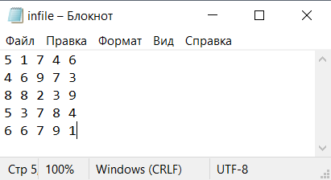
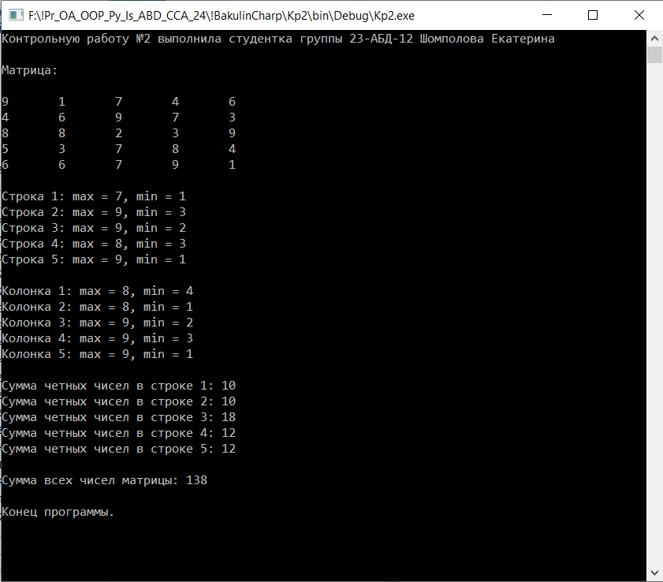
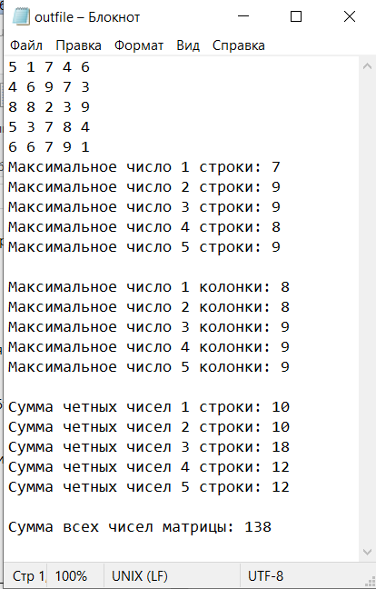

| Контрольная работа 2. Обработка информации, массивов. Чтение, запись информации в файл. | ||
| Назад | ||
|
Вариант 1. Каждая работа должна быть подписана фамилией. В
программу выводится информация о ходе работы, В новый файл
записать матрицу, последовательно каждое действие и итоговый
результат. Дан файл, содержащий двумерный массив, размерности 5 х 5. 1. Вывести матрицу на экран. 2. Определить максимальное и минимальное число в каждой строке и каждой колонке. 3. Найти сумму четных чисел в каждой строке. 4. Определить сумму всех чисел матрицы. 5. В новый файл записать матрицу, последовательно каждое действие и итоговый результат. Решение задачи выполнить на языке C#. пример матрицы 5 1 7 4 6 4 6 9 7 3 8 8 2 3 9 5 3 7 8 4 6 6 7 9 1 Вид информации в файле
 Пример решения задачи:
 Результат записанный в файл

Вариант 2. Каждая работа должна быть подписана фамилией. В
программу выводится информация о ходе работы, В новый файл
записать матрицу, последовательно каждое действие и итоговый
результат. Дан файл, содержащий двумерный массив, размерности 5 х 5. 1. Вывести матрицу на экран. 2. Определить количество отрицательных элементов. 3. Определить количество положительных и отрицательных элементов массива. в каждой строке и в матрице 4. Определить количество четных элементов (ожидаемый результат 11) 5. Определить количество элементов, оканчивающихся на цифру 5.. (ожидаемый результат 4) 6. В новый файл записать матрицу, последовательно каждое действие и итоговый результат. Решение задачи выполнить на языке C#. пример матрицы 15 1 -7 4 6 4 -6 9 35 -3 8 8 2 -3 9 5 -3 75 8 4 6 6 -7 -95 1
|
||
| Конспект подготовлен Бакулиным А. М. 2008 год. | ||